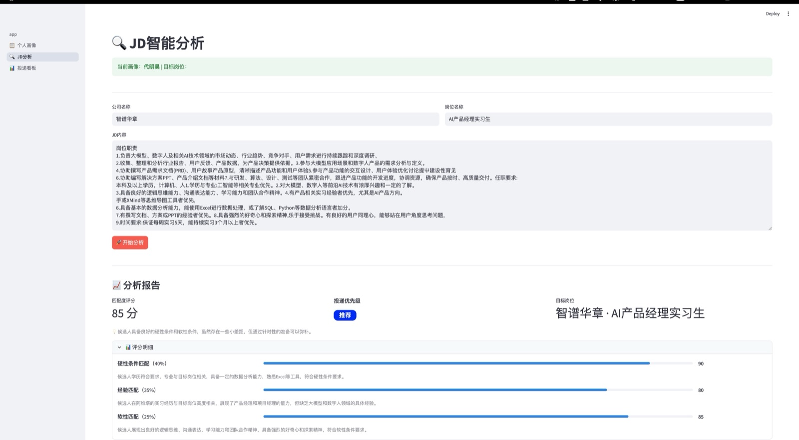

Core coursework主要课程9COP4533 Algorithm Abstraction & DesignCOP4533 Algorithm Abstraction & Design·CEN4721 Human-Computer InteractionCEN4721 Human-Computer Interaction·HFT4442 AI Revolutions and Applications in Tourism, Hospitality and EventHFT4442 AI Revolutions and Applications in Tourism, Hospitality and Event·EEL3872 AI FundamentalsEEL3872 AI Fundamentals·PHI3681 Ethics, Data, and TechnologyPHI3681 Ethics, Data, and Technology·COP3275 Computer Programming Using CCOP3275 Computer Programming Using C·CAP4770 Introduction to Data ScienceCAP4770 Introduction to Data Science·EGN4641 Engineering EntrepreneurshipEGN4641 Engineering Entrepreneurship·QMB3302 Business Analytics and AIQMB3302 Business Analytics and AI
Internship Experience
01ByteDance字节跳动
Forward Deployed Engineer (FDE) Intern
前线部署工程师（FDE）实习生
2026.05 – 2026.08
2026.05 – 2026.08
Role: Embedded product-and-engineering contributor in the AdEx CNOB (China Outbound) team, owning the department's AI efficiency initiatives from business requirements through launch.
定位：驻 AdEx CNOB（中国出海）团队的「最懂业务的产研」，负责部门 AI 提效专项建设，从业务需求到上线全程自己完成。
Delivered: 5 internal applications from scratch in three months (Top Client Health Monitor, In-flight Ad Takedown Anomaly Monitor, RMG Client Risk Concentration Monitor, Policy Unlock Revenue Dashboard, AdEx AI Community Platform), built AI-natively with Claude Code / Codex; also led the PRD for the Account Suspension Investigation Skill.
交付：三个月内从 0 到 1 交付 5 个内部应用（超头部客户健康度监控、投中下线异常监控、RMG 客户风险浓度监控、政策解锁收益看板、AdEx AI 社区平台），用 Claude Code / Codex 以 AI Native 方式开发；另主导账户封禁排查 Skill 的产品定义与 PRD。
Results: Contributed to 4 of the department's 6 Q3 AI efficiency initiatives, all completed on schedule and meeting the quarterly OKRs, including "AI Tool Adoption Rate 100%" through the AdEx AI Community Platform.
成果：参与部门 Q3 六个 AI 提效专项中的 4 个，全部按计划完成并达成季度 OKR；「AI 工具 Adoption Rate 100%」通过 AdEx AI 社区平台达成。
02AVATR阿维塔
Product Manager Intern
产品经理实习生
2025.06 – 2025.08
2025.06 – 2025.08
Role: The project team's only intern product manager (IT Process Department, Quality Business Support Team), independently owning requirements management and project coordination under a mentor's guidance.
Delivered: Requirements and process design for the after-sales warranty claims system redesign and AI agent feasibility study; quality-domain AI use-case exploration with MVP validation; end-to-end coordination of the OTA Operations Management Platform Phase II project (budget over RMB 500,000).
交付：主导售后三包索赔系统重构与 AI 智能体预研的需求与流程设计；探索质量域 AI 落地场景并做 MVP 验证；独立统筹预算超 50 万元的 OTA 运营管理平台二期项目。
Results: The claims-system PRD passed a senior director-level review and P0 entered development (projected 70% efficiency gain after launch); OTA benefits approved at initiation (5 FTE, about RMB 1.25 million a year) with 9 vendors evaluated in one week; authored the "Research Report on AI Applications in Automotive Companies".
An embedded product-and-engineering role delivering internal AI applications end to end through AI-native development
驻业务团队的产品 + 研发角色，以 AI Native 方式端到端交付内部 AI 应用
Context & role: The AdEx CNOB team helps Chinese advertisers operating internationally resolve ad review, appeal, policy, and account compliance issues. AI requests had to queue through a BRD → review → product-and-engineering scheduling → development process, with engineering capacity as the bottleneck. Served as the team's product-and-engineering contributor with deep knowledge of AdEx operations, owning the department's AI efficiency initiatives end to end, from business requirements through launch.
背景与定位：AdEx CNOB 团队帮助中国出海广告主解决广告审核、申诉、政策与账户合规问题。团队的 AI 需求需经「BRD → 评审 → 产研排期 → 开发」链路排队，产研资源是瓶颈；因此以「最懂 AdEx 业务的产研」为定位，负责部门 AI 提效专项建设，从业务需求到上线全部自己完成。
Responsibilities: Delivered 5 internal applications from scratch within three months—the Top Client Health Monitor, In-flight Ad Takedown Anomaly Monitor, RMG Client Risk Concentration Monitor, Policy Unlock Revenue Dashboard, and AdEx AI Community Platform—and deployed them on the company's internal AI application hosting platform. Also led product definition and the PRD for 1 additional project, the Account Suspension Investigation Skill (a packaged agent workflow on BIOS for investigating mistaken account suspensions). Used an AI-native development approach: owned requirements gathering, metric definitions, architecture design, code review, and technical acceptance; used Claude Code / Codex for implementation; and ran business acceptance testing and weekly progress reporting.
工作内容：三个月内从 0 到 1 交付 5 个内部应用（超头部客户健康度监控、投中下线异常监控、RMG 客户风险浓度监控、政策解锁收益看板、AdEx AI 社区平台）并部署到公司内部 AI 应用托管平台；另主导 1 个项目的产品定义与 PRD（账户封禁排查 Agent Skill）。采用 AI Native 开发：负责需求收集、数据口径定义、架构设计、代码评审与验收，用 Claude Code / Codex 完成开发，并承担业务验收与周会汇报。
Results: AdEx had 6 AI efficiency initiatives in Q3: top-client monitoring, policy unlocking, mistaken account suspensions, erroneous ad-creative enforcement, TAP, and animated-comic risk control. Contributed to 4 of them: top-client monitoring, policy unlocking, mistaken account suspensions, and animated-comic risk control. All initiatives were completed on schedule within the quarter and met the quarterly OKRs; the AdEx AI Community Platform supported achievement of the “AI Tool Adoption Rate 100%” target.
成果：AdEx 部门 Q3 共设 6 个 AI 提效专项（超头客监控、政策解锁、账户误封禁、广告素材误伤、TAP、漫剧风险控制），参与其中 4 个（超头客、政策解锁、账户误封禁、漫剧风险控制）；季度内所有专项按计划完成并达成季度 OKR，其中「AI 工具 Adoption Rate 100%」目标通过 AdEx AI 社区平台达成。
01
Top Client Health Monitor · Dashboard & Web Workbench
超头部客户健康度监控 · 数据看板 + Web 工作台
Product Manager & Developer
产品经理 & 开发
Built health monitoring for CNOB's 39 top outbound advertisers, evolving from V1.0 “BI-tool alerts + automated daily reports” into a standalone V2.0 application with a client-group owner workbench. After two iterations and multiple refinements, it served 11 AdEx CNOB client-group owners, ran stably for 70+ consecutive days through the end of the internship, identified 3,000+ anomaly records, and was showcased within the department as an outstanding AI efficiency case.
Project background: The health of CNOB's 39 top outbound advertisers was measured through six metric groups, including approval rate, erroneous content rejection, erroneous account enforcement, review turnaround time, and in-flight ad takedowns. The metrics were scattered across business-intelligence (BI) dashboards; anomalies relied on manual observation, with no alerts or follow-through process. Group owners often learned about problems only after a client complaint. The goal was to detect anomalies promptly so owners could intervene proactively.
项目背景：CNOB 39 家头部出海广告主的健康度由审核通过率、内容误拒、账户误处罚、审核时长、投中下线等六组指标构成，此前散落在 BI 看板里，异常靠人盯，没有告警、也没有处理闭环，集团 owner 往往在客户投诉后才知道出了问题。目标是让 owner 第一时间发现异常并主动介入。
V1.0 (BI alerts + automated daily reports): Maintained a client-information and threshold mapping table and used the BI tool's built-in anomaly notifications for threshold-based alerts. An Agent scheduled task also read the internal BI platform daily using the threshold table, wrote over-threshold records to an anomaly log, and generated a static HTML daily report with a health dashboard showing the latest daily values, historical data, and trends. The limitations were that alerts and reports used separately maintained data, and the report was view-only. Also wrote a monitoring setup guide and a shared threshold worksheet for team reuse.
V1.0（BI 告警 + 自动日报）：维护一张客户信息与阈值匹配表，用 BI 工具内置的异常推送实现阈值告警；同时用 Agent 定时任务每日按阈值表读取内部 BI 平台数据，超阈值即写入异常记录底表，并据此生成静态 HTML 日报，内置「健康度驾驶舱」，可看当日最新值、历史数据与变化趋势。局限是告警与日报的数据分开维护，日报只能看、不能操作。另编写监控搭建指南与阈值协作表供团队复用。
V2.0 (from dashboard to workbench): About a month after launch, new problems emerged: client-side violations distorted overall health data, manual exclusions left no record of the work, and groups needed to update Account IDs and thresholds. Expanded the solution into a standalone application with alerts and reports driven by one anomaly log. Retained the dashboard and added an owner workbench for tagging anomalies in each owner's groups: client-side issue; erroneous model enforcement requiring coordination with the model team; or an unsuitable threshold, such as high ad volume triggering a rejection-count threshold while the rejection rate remained normal. Owners could also submit threshold and account changes in the platform, effective as soon as an administrator approved them in Feishu.
V2.0（从看板到工作台）：上线约一个月后发现新的问题：客户自身违规导致的健康度下降会干扰整体数据，人工剔除又留不下工作痕迹；各集团的 Account ID 与阈值也有变更需求。于是增补开发为独立应用，告警与日报统一由同一异常记录底表驱动：保留驾驶舱，新增集团 owner 工作台，对自己负责集团的异常记录打标（客户自身问题 / 模型误伤，需联动模型团队 / 阈值设置不合理，如投放量大导致拒审量超阈但拒审率正常），并可在平台提交阈值与账户变更申请，管理员在飞书点击同意即生效。
Engineering & architecture: V1.0 was not a standalone application: apart from a single table-scanning script, everything was assembled from existing platform capabilities—Feishu tables for thresholds and client information, the BI tool's built-in notifications for Feishu alerts, and a scheduled task on the internal agent platform that ran the script, fetched data, wrote anomaly records to the log, and generated the static HTML daily report. V2.0 became a standalone full-stack application implemented entirely through Vibe Coding: a Python FastAPI backend with 5,000+ lines of business logic, a React frontend, and SQLite. A data-access library with no external dependencies called the BI query API directly, replacing the assistant-layer scheduled task. The initial deployment used one hosted instance; data compliance requirements led to a multi-instance architecture with centralized data, in which only the administrator instance performed scans and notifications while other instances shared anomaly records. Daily scheduled scans took approximately 75–90 minutes. The application served 11 AdEx CNOB client-group owners. Approval-rate calculations were compared value by value against a 1,249-row ground-truth dataset, with zero differences.
Results: The two versions ran stably for 70+ days, with parallel-run validation during the transition. Backfilling all top-client data from the start of 2026 identified 3,000+ anomaly records, with 1,000+ additional records identified since launch. Group owners learned about client issues promptly and proactively coordinated with clients and sales to resolve them, substantially improving the advertising experience for top advertisers. Although scoped to CNOB clients, the project was showcased within the Business Integrity department as an outstanding AI efficiency case, shared as a best-practice example by the internal AI application hosting platform's development team, and used as a reference for the Global AdEx team.
成果：两个版本稳定运行 70+ 天，版本切换期间双跑验证；上线后回溯 2026 年以来全部头部客户数据，识别 3,000+ 条异常记录，上线以来新增识别 1,000+ 条；集团 owner 第一时间获知客户问题并主动介入，协同客户与销售解决，显著改善头部广告主的投放体验。项目虽以 CNOB 客户为范围，但被作为 AI 提效优秀案例在商业安全部门内部展示，被内部 AI 应用托管平台的开发团队作为优秀实践案例分享，并作为范本供 Global AdEx 团队参考借鉴。
02
In-flight Ad Takedown Anomaly Monitor
投中下线异常监控系统
Product Manager & Developer
产品经理 & 开发
Built real-time in-flight ad takedown alerts for 831 clients / 2,548 accounts. Initiated urgently in late July after an ad-delivery issue with a client in one industry, the platform went live in two days by reusing the Top Client Health Monitor's probe logic. A 5-minute probe cadence supported timely detection, while a modular configuration across three dimensions let group owners manage thresholds and recipients on their own. By the end of the internship, it had run stably for 30 days, sent approximately 20 alerts daily, covered 11 sub-industries, and was highly commended by the department head.
Project background: A high-priority client issue in a particular industry in late July highlighted the poor experience caused by ads being taken down during active delivery. The business needed real-time alerts. Reused the Top Client Health Monitor's probe-and-scan logic to build and launch the platform in two days. To meet timeliness requirements, increased probe frequency from every 30 minutes to every 5 minutes. Coverage included 831 clients / 2,548 accounts.
Product design (three-dimensional modular configuration + bulk import): Organized configuration around client groups, monitoring groups, and recipients. Each client group contained Account IDs with individual takedown-rate / takedown-count thresholds and AND / OR relationships. Monitoring groups mapped to notification recipients and typically represented a sub-industry—such as social apps, utility apps, consumer-electronics (3C) e-commerce, web e-commerce, or beauty e-commerce—under a group owner. Recipient records contained names and Feishu email addresses. Monitoring groups connected client groups with recipients, allowing flexible combinations. Owners could edit thresholds and their logical relationships; always-true rules were rejected on entry. The platform did not integrate an LLM. To reduce data-entry effort, it provided a standard CSV workflow: download a template → reformat client information to match → upload. Code automatically deduplicated and validated records, updated changed thresholds, added new Account IDs, and also supported full replacement.
产品设计（三维度模块化配置 + 批量导入）：配置中心按三个维度组织：客户集团（下挂若干 Account ID，每个 Account ID 有各自的下线率 / 下线量阈值及 AND / OR 关系）、监控组（对应若干通知接收人，通常一个监控组即一个子行业，如社交应用、工具应用、3C 电商、Web 电商、美妆电商，各由一位集团 owner 负责）、接收人（姓名 + 飞书邮箱）。监控组把客户集团与接收人拼接起来，任意客户集团可通过监控组与任意接收人自由组合；集团 owner 可自行设置阈值与阈值关系，恒真规则写入即拒。平台未接入大模型能力，为降低录入成本提供标准 CSV 模板：下载模板 → 按模板格式转写客户信息表 → 上传，代码自动去重与校验，阈值有变则更新、新 Account ID 则新增，另提供全量覆盖模式。
Engineering & architecture: Two 5-minute probes read the BI platform. A stability gate required two matching observations of the same data version at least 5 minutes apart before triggering a scan. A persistent Outbox stored alerts and per-recipient delivery records, then aggregated notifications into Feishu interactive cards by monitoring group. The notifier failed closed. Built with a Go service, a React / TypeScript frontend, and a Python data-access bridge, with code generated from a single OpenAPI contract and concurrent paths checked using race detection.
Results: Ran stably for 30 days from launch through the end of the internship, delivering approximately 20 alerts per day across 11 sub-industries. Fully met the project requirements and was highly commended by the department head.
Addressed accounts being suspended again for real-money gambling (RMG) after being allowlisted: matched the allowlist against suspension records account by account, calculated risk concentration across 35 groups by industry, and generated bilingual HTML daily reports that client-group owners could approve and send to sales in one click. An additional request outside the Q3 OKRs; delivered for business testing with positive feedback before the internship ended, after which a successor completed the formal launch.
Project background: Some advertiser accounts had been incorrectly suspended for RMG (Real Money Gambling), manually investigated, and allowlisted, only to be suspended again for RMG-related reasons. This created a poor client experience. At an RMG governance coordination meeting, the business requested account-by-account matching of allowlists and suspension records to show the concentration of “still suspended after allowlisting” by industry, enabling sales to intervene promptly.
Metric definition & calculation: Concentration = number of accounts appearing in both the suspension list and the allowlist / number of allowlisted accounts; the ideal value is 0. Worked with the business to align the numerator, denominator, and enforcement-type definitions. Aggregated through four levels—advertiser → account → salesperson → sales group—and divided the client list into 35 groups, with industry-level presentation.
Reporting & distribution: Designed bilingual HTML reports for sales using a fixed, engineered template, replacing only the daily data while keeping the format consistent. Generated reports were first sent to group owners, who confirmed in the workbench whether they could be shared onward, then sent them to sales in one click using Feishu email addresses. Used the internal Agent's static HTML hosting capability to generate directly accessible links without file downloads. Links followed a standardized “industry–group–date” naming scheme, for example xx行业--xx组--2026.8.23.html.
日报与分发流程：日报面向销售，是双语 HTML，用标准化模板做了工程固化，每天只替换当日数据、格式保持一致。分发流程：日报生成后先推送集团 owner，owner 在工作台确认可否对外透传，确认后在平台上按销售的飞书邮箱一键发送；利用内部 Agent 托管静态 HTML 的能力生成可直接打开的链接（无需下载文件），链接按「行业–组–日期」标准化命名，如 xx行业--xx组--2026.8.23.html。
Engineering & architecture: Used a Go backend and Python data-access bridge, reusing the Top Client Health Monitor's data-access library, with direct delivery through a custom Feishu bot. Identified and fixed several data pitfalls during testing: aggregation keys had to use (salesperson, account) rather than account alone, which had misattributed 137 rows; report dates had to use the data partition date (T-2) rather than file modification time; dataset availability had to be verified with real queries rather than metadata; and cross-dimension queries on the internal BI platform could collapse rows non-monotonically, requiring empirical tests for every field combination.
Delivery status: Scoped as an additional business request outside the Q3 OKRs. Delivered to business users for testing before the internship ended, with positive feedback; a successor then completed the formal launch, and the monitor is now live.
Consolidated policy-unlock revenue scattered across 15 internal business-intelligence (BI) dashboards into heatmaps by geography, placement, and industry. Daily automatic updates, custom date ranges, and editable policy names replaced 2–3 hours of weekly manual data collection. Two manual business-side checks found an exact data match. The dashboard ran stably for 50 days and met the Q3 OKR.
Project background: AdEx helps CNOB advertisers unlock advertising policies to generate additional revenue and needs to track that revenue over time. The data was scattered across 15 BI dashboards and had to be tracked separately by geography, placement (TikTok's main app / Pangle, ByteDance's third-party ad network), and industry. Previously, manually collecting and consolidating it took 2–3 hours per week.
Product design: Integrated data from the 15 dashboards through APIs and created one heatmap for each dimension, with dimension values on the horizontal axis, policies on the vertical axis, and policy-unlock revenue in each cell—for example, CNOB revenue attributable to unlocking a particular policy. Supported custom date ranges. Because revenue tracking began on different dates for different policies, added a homepage Gantt chart showing each tracking start date. Source data contained policy codes but no names, so users could edit policy names and manage tags, with notifications for new tags.
产品设计：通过 API 把 15 个看板的数据整合到一起，每个维度一张热力图（横轴为该维度的取值，纵轴为政策，格子即该政策解锁带来的收益，如「CNOB 因解锁 xx 政策产生的收益」），支持自选日期范围；因各政策的收益追踪起始日不同，首页提供甘特图直观展示每个政策的追踪起始日；看板数据里只有政策代号没有名称，应用内支持自编辑政策名称，并提供标签管理与新标签提醒。
Engineering & architecture: Migrated from a static page to a hosted application with a Python backend, build-free single-page frontend, and SQLite. Imported 13,708 historical rows and established a daily ingestion pipeline. An application-level scheduled job fetched updated data through APIs each day without probe-based scanning. Migration to the hosting platform was complete before the internship ended. Wrote the P0 PRD, migration design, business acceptance documentation, release notes, and acceptance meeting minutes.
Results: Replaced 2–3 hours of weekly manual data collection with daily automatic updates, making data available on demand across three visualized dimensions. The policy-unlocking initiative owner used it routinely, and department leaders also reviewed the revenue data. Two business-side manual, item-by-item checks matched the dashboard exactly. It ran stably for 50 days after formal launch, fully met business needs, and achieved the Q3 OKR.
Built an AI operations portal for approximately 107 people across 12 Global AdEx teams. Integrated 4 BIOS APIs to display usage and contribution data by person and team, with a four-stage growth incentive system and an administration console. All staff opened and used BIOS accounts; daily active usage was approximately 70 and weekly activity approximately 400 person-times. AdEx staff created approximately 40 Skills. The platform supported and achieved the Q3 “AI Tool Adoption Rate 100%” OKR.
Project background: The Business Integrity department built BIOS, an in-house agent platform based on the open-source OpenClaw agent framework and used through a Feishu (Lark) chatbot, and encouraged everyone in the department to create, publish, and use Skills (reusable agent tools) on it. AdEx was its largest business user, and the BIOS product-and-engineering team built many efficiency Skills for AdEx (the Account Suspension Investigation Skill described below runs on BIOS). The CNOB team was the single point of contact between Global AdEx and BIOS and was responsible for driving BIOS adoption across all of Global AdEx, so a portal was needed to track, showcase, and incentivize BIOS usage.
Product design (four data views): Integrated 4 BIOS APIs into four views: (1) a usage leaderboard ranking BIOS use by person and regional team; (2) a contributor leaderboard encouraging AdEx staff to build Skills for their own business scenarios and showing who created the most Skills and whose Skills were used most; (3) an AdEx-related Skill directory covering Skills tagged “AdEx efficiency,” Skills authored by AdEx staff, and general-purpose Business Integrity Skills frequently used by AdEx, such as data_query, to track OKR questions about business-scenario coverage and resolved tickets; and (4) a personal growth page recording each member's usage, including their Top 10 Skills and cumulative use. Also added a demand radar with requests and voting, points, announcements, and sharing-session registration.
Growth system & roles: Defined four stages with corresponding incentives: AI Learner → AI User → AI Builder → AI Leader. Encouraged people to learn, use, build, and help others adopt AI through sharing successful cases, including the Top Client Health Monitor. The community had regular-user and administrator roles. Administrators had a separate console for publishing events and viewing operational data unavailable to regular users, such as members who had not yet opened BIOS accounts or used them infrequently, enabling targeted adoption efforts.
成长体系与角色：设置四级成长路径与对应激励：AI 学习者 → AI 应用者 → AI 建设者 → AI 引领者，鼓励成员从学着用、到会用、到自己建、到带着别人用（分享优秀案例，超头部客户健康度监控即在此分享）。社区分普通用户与管理员两种角色：管理员有独立后台，可发布活动信息，并查看普通用户看不到的运营数据，如哪些成员尚未开通 BIOS 账户、哪些是低频使用者，便于定向推动。
Engineering & architecture: Deployed in a production container on the internal AI application hosting platform. Used a single-process HTTP service built only with Python's standard library and a single-page HTML frontend, deliberately avoiding third-party dependencies and a build step. Used two SQLite databases: a business database with 15 tables and a daily activity archive spanning 110+ days, with single sign-on (SSO) integration. In the centralized-data architecture, only the administrator instance fetched data, which was synchronized to user instances through a centralized database. Documented the earlier “thin FastAPI proxy + SSO middleware” approach as a reusable deployment and authentication guide. Employee names and email addresses were handled under explicit security rules: data stayed inside the container and was excluded from the repository and update packages.
Results: Launched for all Global AdEx staff, approximately 107 people across 12 teams with some personnel changes. All staff opened and used BIOS accounts; daily active usage was approximately 70 and weekly activity approximately 400 person-times. AdEx staff created approximately 40 Skills, with approximately 120 AdEx-related Skills in total. Held sharing sessions every two weeks, with 4 completed sessions and 2–3 cases per session. Using “all Global AdEx staff opened and used BIOS” as the measurement definition, the platform supported the department's Q3 “AI Tool Adoption Rate 100%” target and achieved it within the quarter.
Designed an account suspension investigation Skill for Global AdEx. Given a batch of account IDs, it automatically aggregates information that previously required visiting 10+ pages across the internal BI platform and an internal troubleshooting platform, producing a report of approximately 10 sections per account. Owned product and testing; after assessing global users, chose a BIOS Skill accessed through each user's Feishu bot instead of a standalone web platform. Rolled out to Global AdEx after launch, reducing investigation time for 10 accounts from 100 minutes to 10 minutes.
为 Global AdEx 做的账户封禁原因排查 Skill：输入一批 account ID，自动从 BI 平台与内部排查平台聚合原本要翻 10+ 个页面的信息，生成每个账号约 10 个章节的排查报告；担任产品 + 测试角色，评估全球用户后选择以 BIOS Skill + 个人飞书 bot 为入口而非独立 Web 平台；上线后推广至 Global AdEx，10 个账号的排查从 100 分钟缩短到 10 分钟。
Project background: Helping sales and clients understand account suspensions is a major part of Global AdEx's daily work. Suspension reasons cannot be established from one piece of evidence: staff had to review 10+ pages across the internal BI platform and an internal troubleshooting platform, consolidate the information, and apply their experience. Switching between pages for one account ID was already time-consuming, and batches of dozens of suspended accounts were common. The need was a tool that accepted a batch of account IDs and quickly aggregated all evidence required for investigation.
项目背景：帮助销售和客户处理账户封户原因是 Global AdEx 同学每天的主要工作之一。封户原因无法由单一证据体现，需要在 BI 平台和一个内部排查平台之间浏览 10+ 个页面，把信息汇总后凭经验判断；拿着一个 account ID 来回切换整理已经很耗时，而一次几十个 account ID 的批量封户又很常见。因此需要一个工具：输入一批 account ID，快速聚合排查所需的全部信息。
Product decisions & design: Initially considered a standalone web platform and a BIOS Skill. After evaluating usage habits across Global AdEx regions, selected a BIOS Skill accessed through each person's Feishu bot, avoiding another entry point or account. Defined which fields to retrieve from each platform and structured an approximately 10-section report per account ID, with each section covering one category of data. Each account occupied one tab, allowing batch results to be reviewed account by account.
产品决策与设计：最初在「独立 Web 平台」和「BIOS 上的 Skill」之间犹豫，评估 Global AdEx 各地区用户的使用习惯后，选择做成 BIOS Skill、以每个人的飞书 bot 为入口，不新增入口和账号；明确了分别从两个平台取哪些数据字段，每个 account ID 输出一份约 10 个章节的排查报告，每个章节对应一类数据，每个账号占一个 tab，批量输入时逐账号呈现。
Role & delivery: Owned product and testing: requirements definition and the PRD, data-field selection, and report structure. After engineering implementation, worked with business users on delivery acceptance and promoted the Skill across Global AdEx after formal launch.
角色与交付：担任产品 + 测试角色：负责需求定义与 PRD、取数字段与报告结构设计；研发完成后与业务使用方一起完成交付验收，正式上线后推广至 Global AdEx。
Results: Substantially improved investigation efficiency for AdEx staff. Savings for a single account ID were limited, while batch processing made a significant difference: previously, each account required approximately 10 minutes; submitting 10 account IDs together now let users reach and record a conclusion for every account within 10 minutes, reducing total elapsed time from 100 minutes to 10 minutes.
成果：大幅提升 AdEx 同学排查封户的效率。单个 account ID 的节省不明显，批量场景差异显著：原来逐个排查每个 account ID 约 10 分钟，现在 10 个 account ID 一起提交，10 分钟内即可对每个账号的封户原因得出结论并记录，耗时从 100 分钟缩短至 10 分钟。
IT Process Department · Quality Business Support Team · The project team's only intern product manager
IT 流程部 · 质量业务支持团队 · 项目组唯一实习生产品经理
Product Manager Intern
产品经理实习生
Traditional product management experience: requirements management, complex business process redesign, and vendor evaluation
传统产品经理经历：需求管理、复杂业务流程重构、供应商评审
Background & role: AVATR is Changan Auto's new-energy vehicle brand and was advancing digitalization and AI transformation in quality management. The IT Process Department team specifically supported business systems for the Quality Department. As the project team's only intern product manager, independently owned requirements management and project coordination under a mentor's guidance, progressing a core strategic project, an AI exploration project, and a procurement evaluation project in parallel.
背景与定位：阿维塔是长安汽车旗下新能源品牌，正在推动质量管理数字化与 AI 转型。所在的 IT 流程部团队专门支持质量部门的业务系统建设，作为项目组唯一的实习生产品经理，在带教老师指导下独立承担需求管理与项目统筹，同时推进一个核心战略项目、一个 AI 探索项目和一个采购评审项目。
Responsibilities: Led requirements management and process design for the after-sales warranty claims system redesign and AI agent feasibility study, a core strategic project. As a strategy product manager, identified AI use cases from the Quality Department's digital blueprint and validated MVPs. As project manager and product manager, independently coordinated Phase II of the OTA (over-the-air vehicle software update) Operations Management Platform with a budget exceeding RMB 500,000, covering project approval, tender sourcing, vendor evaluation, and finalization of the feature list.
工作内容：主导售后三包索赔系统重构与 AI 智能体预研（核心战略项目）的需求管理与流程设计；以策略产品经理身份从质量部数字化蓝图出发探索质量域 AI 落地场景并做 MVP 验证；以项目经理 & 产品经理身份独立统筹预算超 50 万元的 OTA（整车远程升级）运营管理平台二期项目，覆盖立项评审、招标寻源、供应商评审到功能清单锁定。
Results: The warranty claims system PRD passed a senior director-level review in the Quality Department, and P0 core features entered development; the system was projected to improve workforce efficiency across the claims lifecycle by 70% after launch. The OTA project's quantified benefits were approved at project initiation: annual savings of 5 full-time staff equivalents, approximately RMB 1.25 million. Completed technical evaluations of 9 vendors and selected a winning bidder within one week. Independently produced the “Research Report on AI Applications in Automotive Companies” and a quality-domain AI feasibility assessment to inform technology decisions.
成果：售后三包索赔系统 PRD 通过质量部门高级总监级评审，P0 核心功能进入开发，上线后索赔全链路预计提升 70% 人效；OTA 项目立项量化收益获批（每年节省 5 人力，约 125 万元），一周内完成 9 家供应商技术评审并选定中标方；独立完成《车企 AI 应用现状调研报告》与质量域 AI 可行性评估，为技术路线决策提供依据。
07
Quality-Domain AI Knowledge Graph & Use-Case Exploration
质量域 AI 知识图谱与场景探索
Strategy Product Manager
策略产品经理
Defined a quality-domain knowledge graph product direction from the Quality Department's digital blueprint. Independently authored the “Research Report on AI Applications in Automotive Companies”, ran low-cost MVP validation using an internal AI assistant and Feishu Aily, and led technical discussions with ByteDance, Baidu, and Huawei. Concluded that building a high-quality internal data foundation should take priority in the technology roadmap.
从质量部数字化蓝图出发定义「质量域知识图谱」产品方向，独立撰写《车企 AI 应用现状调研报告》，用内部 AI 助手与飞书 Aily 做低成本 MVP 验证，并主导与字节跳动、百度、华为的技术交流，得出「优先建设内部高质量数据底座」的技术路线结论。
Project background & role: AVATR was actively pursuing AI transformation, and the team was responsible for exploring AI applications within the Quality Department. As strategy product manager, identified implementable AI use cases from its digital business blueprint and assessed their feasibility.
项目背景与角色：阿维塔积极推动 AI 转型，团队负责在质量部门业务中探索 AI 落地场景。担任策略产品经理，从质量部数字化业务蓝图出发识别可落地的 AI 赋能场景并进行可行性验证。
From business blueprint to use cases: Broke down requirements from scratch using the Quality Department's digital business blueprint. To address difficult regulatory manual searches and time-consuming compliance checks, translated traditional document management needs into a quality-domain knowledge graph product definition. Established a “manuals as a database” exploration direction: structure quality rules to make information in unstructured documents readily retrievable.
Industry research & strategic insights: Independently authored the “Research Report on AI Applications in Automotive Companies”, analyzing AI implementation strategies in quality and after-sales operations at emerging automakers such as XPeng, NIO, and Li Auto, and established manufacturers including Toyota and BMW. Compared approaches to knowledge base construction and decision support, providing a basis for shifting internal AI development from general-purpose LLMs toward a domain-specific knowledge graph.
行业竞品与战略洞察：独立撰写《车企 AI 应用现状调研报告》，拆解小鹏、蔚来、理想等新势力及丰田、宝马等传统车企在质量/售后域的 AI 落地策略，对比各家在知识库构建与辅助决策上的路径差异，为内部 AI 建设提供从「通用大模型」转向「垂直领域知识图谱」的决策依据。
MVP validation & product direction: Used NotebookLM as a product reference to explore traceable, LLM-powered question answering grounded in quality regulation documents. Conducted low-cost MVP validation with an internal AI assistant based on DeepSeek and Doubao (ByteDance's LLM) and with Feishu Aily. Used real regulatory questions from the business to test answer accuracy in standards lookup scenarios.
Vendor ecosystem & technical feasibility: Led technical discussions with major AI vendors including ByteDance (Feishu Aily), Baidu, and Huawei. Identified the difficulty of finding a practical entry point for general-purpose LLMs in the quality domain, where requirements were fragmented into small, specific functions. Adjusted the technology roadmap accordingly, prioritizing a high-quality internal data foundation.
供应商生态与技术可行性评估：主导与字节跳动（飞书 Aily）、百度、华为等头部 AI 厂商的技术交流，识别出通用大模型在质量垂直领域「切入点难寻、功能点细碎」的问题，据此调整技术路线，明确优先建设内部高质量数据底座。
Individual deliverables: Independently completed the “Research Report on AI Applications in Automotive Companies” and a quality-domain AI feasibility assessment, including strategic recommendations for technology selection.
个人输出物：独立完成《车企 AI 应用现状调研报告》；完成质量域 AI 可行性评估，输出技术选型策略建议。
08
After-Sales Warranty Claims System Redesign & AI Agent Feasibility Study (Core Strategic Project)
售后三包索赔系统重构与 AI 智能体预研（核心战略项目）
Product Manager & Project Manager
产品经理 & 项目经理
Redesigned from scratch a core system handling 97% of quality claims by value. As the project team's only intern PM, independently owned requirements and coordination. Designed complex reversal, mandatory claim, and consolidated approval workflows; validated AI use cases with a retrieval-augmented generation (RAG) proof of concept (PoC) and proposed a three-level tagging tree for data governance. The PRD passed a senior director-level review, and P0 entered development, with a projected 70% improvement in workforce efficiency after launch.
Project background & role: After-sales warranty claims accounted for 97% of total quality claims by value. The existing system reused Changan Auto's QCS, resulting in mismatched workflows, inefficient handwritten offline work orders, and unstructured data. As the project team's only intern PM, independently owned requirements management and project coordination, working with a mentor to lead the redesign.
Complex business workflow design: Conducted in-depth research with Finance and Quality to redesign complex workflows. Designed a reversal workflow with end-to-end, cross-platform validation from the dealer claims interface through SAP and the tax system. Defined joint sign-off and automatic supplier deposit deductions for mandatory claims. Introduced consolidated approvals and an exception circuit breaker to aggregate similar low-risk documents, reducing repetitive management approvals by 60%.
复杂业务流程逻辑设计：深入调研财务与质量部，针对高复杂场景重构业务流：设计「红冲流程」实现经销商索赔端至 SAP 及税务系统的跨平台闭环校验；定义「强制索赔」中会签及供应商保证金自动抵扣逻辑；引入「合并审批」与「异常熔断」机制，将同类低风险单据聚合处理，减少管理层 60% 的重复审批操作。
AI exploration & data governance: For automatic matching of special agreements, proactively collected historical claim acceptance documents and supplier agreements, then ran a no-code RAG PoC with the internal AI assistant (DeepSeek / Doubao). After identifying hallucinations caused by unstructured inputs, proposed replacing free-text fault descriptions with a three-level tagging tree—system, component, and symptom—to reduce noise through structured data capture at the source. The validation also showed that general-purpose models could not be used directly in this domain at that stage, informing the technology roadmap.
AI 场景探索与数据治理：针对「特殊协议自动匹配」场景，主动收集历史索赔认可书及供应商特殊协议，利用内部 AI 助手（DeepSeek / 豆包模型）进行零代码 RAG PoC 验证。识别到模型因非结构化输入产生「幻觉」后，提出数据治理方案，将自由文本故障描述升级为「三级标签树」（系统–部件–现象），通过源头数据结构化解决噪音问题，并验证了现阶段通用模型在垂直场景下不可直接使用，为技术路线决策提供依据。
Upstream / downstream integration & data consistency: Coordinated interfaces across SAP, the warehouse management system (WMS), and the dealer management system (DMS), defining 20+ core fields to ensure consistency across systems.
Interim results: Worked with the mentor to secure senior director-level approval of the PRD in the Quality Department. P0 core features entered development. The system was projected to improve workforce efficiency across the claims lifecycle by 70% after launch.
OTA Operations Management Platform: Phase II Enhancements
OTA 运营管理平台二期增补开发
Project Manager & Product Manager
项目经理 & 产品经理
Independently coordinated the full lifecycle of a second-level review project with a budget exceeding RMB 500,000. Created a technical evaluation scorecard and disqualification mechanism, completed reviews of 9 vendors within one week, and eliminated 2 high-risk companies; GienTech was ultimately selected. Quantified benefits were approved at project initiation: annual savings of 5 full-time staff equivalents, approximately RMB 1.25 million.
Project background & role: Managed enhancements to the Phase I OTA system, independently coordinating a second-level review project with a budget exceeding RMB 500,000. Scope covered project approval, tender sourcing, vendor management, requirements alignment, and finalization of the feature list.
项目背景与角色：在 OTA 一期系统基础上进行增补开发，独立负责预算超 50 万元的二级评审项目全流程统筹，包括立项评审、招标寻源、供应商管理、需求对齐及功能清单锁定。
Vendor qualification & evaluation: Created a technical evaluation scorecard and established a circuit-breaker mechanism with veto authority. Conducted in-depth due diligence on 9 vendors and eliminated 2 high-risk companies. Completed all technical evaluations within one week; the review panel ultimately selected GienTech, meeting both quality and cost objectives.
Project results: Quantified benefits were approved at project initiation: annual savings of 5 full-time staff equivalents, approximately RMB 1.25 million in costs. The project passed technical review and completed procurement, moving into requirements discovery and P0 feature development.
Turned a friend's tabby cat, Xu bobo, into a desktop companion and documented a reusable process for turning a real pet into a desktop pet: phone photos → reference images recreated in Jimeng (ByteDance's AI image-generation tool) → looping action videos generated with Seedance (ByteDance's AI video-generation model) → a native macOS app built through Vibe Coding. In v2.0, switched to transparent HEVC with native Swift playback, reducing the app from approximately 80 MB to 4 MB and bringing resident CPU usage close to 0.
Project background: Modeled a desktop pet on a friend's tabby cat, Xu bobo, with idle, head-turning, paw-reaching, stretching, and drinking behaviors to provide familiar companionship during work. The goal extended beyond one app: a reusable method requiring no drawing, animation, or client application engineering skills—just a phone, an AI image / video generation tool, and an AI coding tool.
项目背景：以朋友家的狸花猫「许bobo」为原型，做一只能在桌面上待机、转头、伸爪、伸懒腰、喝水的电子宠物，让上班时随时有熟悉的陪伴感。目标不只是一个 App，而是一套不需要绘画、动画和客户端工程技能就能复用的方法论：一部手机、一个 AI 生图 / 生视频工具、一个 AI Coding 工具。
Appearance recreation & consistency: Used real photos as references to generate a photorealistic green-screen base image in Jimeng. Every subsequent pose image—front-facing seated, looking left, and looking right—used a reference image and explicit appearance constraints for fur color, tabby markings, eye color, and body shape to keep the character consistent across poses.
Action video generation: Used Seedance to generate 5-second seamless loops following an “image A → image B → image A” sequence, with matching first and last frames. Created 5 actions: idle breathing, looking around, reaching a paw, stretching, and drinking. Used the head-turning video for mouse-following behavior.
动作视频生成：用 Seedance 按「图 A → 图 B → 图 A」首尾同帧的方式生成 5 秒无缝循环视频，共 5 段动作（待机呼吸、转头环视、伸爪、伸懒腰、喝水），转头视频用于鼠标跟随。
Engineering & architecture (v1.0 → v2.0): First worked with AI to turn the requirements into a structured PRD. In v1.0, validated feasibility with Python + PyQt6 + OpenCV and real-time green-screen keying. For v2.0, adopted an AI-proposed redesign: pre-key the videos and export transparent HEVC with an alpha channel, then use native Swift + AVPlayerLooper for hardware-accelerated playback. Reduced the app from approximately 80 MB to 4 MB, with resident CPU usage close to 0. The reusable lesson: validate through the fastest route first, then ask AI for a redesign without becoming locked into the first version's technology choices.
工程与架构（v1.0 → v2.0）：先让 AI 把需求聊成结构化 PRD；v1.0 用 Python + PyQt6 + OpenCV 实时绿幕抠图跑通可行性；v2.0 采纳 AI 提出的重构方案，把绿幕视频预先抠像导出为带 alpha 通道的透明 HEVC，用原生 Swift + AVPlayerLooper 硬解播放，体积从 80MB 级降到 4MB，常驻 CPU 占用接近 0。方法论要点：先用最快路径跑通，再让 AI 提重构方案，不被第一版技术选型锁死。
Delivery: Packaged the app as a .dmg and provided a web link. Open-sourced the methodology—including a five-step process, all tested prompts, and lessons from implementation—along with the assets.
A personal knowledge base ingestion tool delivered in three hours with Claude Code. Uploading a document triggers automatic summarization, knowledge-domain identification, tagging, and archiving, with a dashboard and AI insights.
用 Claude Code 三小时交付的个人知识库入库工具：上传文档即自动摘要、识别知识域、打标签并归档，附带 Dashboard 与 AI 洞察。
Project background: While building ORION's personal knowledge base, document ingestion was the biggest source of friction. Manually naming, classifying, and extracting key information took 5–10 minutes per document, leaving the knowledge base perpetually at the “want to build it” stage. The goal was to reduce ingestion friction to nearly zero.
Product & development: Independently completed the product design (PRD) and all development. Used Claude Code without writing code manually, delivering a complete application from an empty directory within 3 hours and demonstrating AI-native product development capability.
产品与开发：独立完成产品设计（PRD）与全部开发，使用 Claude Code 零手写代码，3 小时内从空目录交付完整应用，体现 AI Native 的产品开发能力。
Core features: On upload of a PDF, Markdown, or TXT file, the tool calls Zhipu GLM (a Chinese LLM from Zhipu AI) to generate a summary, classify the document into one of 8 knowledge domains with a confidence score, and extract structured tags. The model then suggests a standardized filename and offers one-click archiving to the local knowledge base. All file operations require user confirmation: the AI proposes, and the user confirms or corrects.
Dashboard & AI insights: Uses metadata across all documents to have an LLM analyze recent focus areas, strengths, areas for improvement, and knowledge gaps. Persists insights and supports incremental updates.
Dashboard 与 AI 洞察：基于全量文档元数据，LLM 自动分析近期重心、能力优势、改进方向与知识盲区，洞察结果持久化存储并支持增量更新。
Python · Streamlit · Zhipu GLM API · Claude Code
Python · Streamlit · 智谱 GLM API · Claude Code
ACTUAL SCREENSHOT真实产品截图03

Resume Copilot
Resume Copilot
03
Personal project · 2026.03个人项目 · 2026.03
Three-dimensional resume-to-job-description matching plus an application progress dashboard, automating the job search workflow from reading a JD to deciding where to apply.
Project background: After submitting batches of summer job applications, evaluating each JD manually was inefficient, while scattered application records made tracking and retrospective review difficult. The goal was to automate the “read JD → assess fit → manage applications” workflow.
Matching analysis: Built with Claude Code without hand-writing any code. Uploading a resume automatically builds a candidate profile whose data structure mirrors the Feishu (Lark) HR schema; after a JD is pasted, the model scores three weighted factors—hard requirements (40%), experience fit (35%), and soft factors (25%)—and produces a match score, an itemized gap analysis, and tailored resume improvement suggestions.
匹配分析：使用 Claude Code 零手写代码开发：上传简历自动构建个人画像（数据结构对齐飞书 HR 系统），粘贴岗位 JD 后 AI 自动完成三维匹配分析（硬性条件 40% / 经验匹配 35% / 软性匹配 25%），输出匹配度评分、逐条差距诊断与定制化简历优化建议。
Application dashboard: Includes an application priority dashboard and status tracking, automating the complete job search workflow from JD parsing through matching analysis to application decisions.
Development lesson: A misspelled model name caused a silent API failure: the page kept spinning without an error message. This established a design principle: failures in AI products must be visible; silent failure is the worst user experience.
开发教训：遇到模型名拼写错误导致的 API 静默失败，页面一直转圈却无报错；由此确立「AI 产品的失败必须可见，静默失败是最差的用户体验」这一设计原则。
Version history: v1 was the “BOSS Zhipin AI Precision Application Analyzer” MVP (BOSS Zhipin is a major Chinese job-search platform), built with Claude Code in one day on 2026-03-15: a multi-page Streamlit application with approximately 1,490 lines of Python, Zhipu GLM-4-FlashX, and a Feishu HR-style profile schema. Resume Copilot is its subsequent name and iteration. The v1 source is archived at workstation/boss-analyzer.
Anyuetong Postpartum Care Center · AI Operations System
安悦童月子中心 · AI 智能运营系统
04
Personal project · 2026.03个人项目 · 2026.03
Designed and validated an AI operations system for the halal postpartum care center in Yinchuan run by the author's mother: a WeChat Service Account (a business account type on WeChat) + a Coze customer-service bot (Coze is ByteDance's no-code bot builder) + a WeCom (WeChat Work) order workflow, covering official-account content generation, automated replies to follower inquiries, appointments, and the full customer lifecycle. Produced a complete plan spanning requirements, P0–P3 priorities, an 8-week roadmap, budget, and risk boundaries. Completed an end-to-end “Coze Bot → Python middleware server → WeChat test account” PoC within one day.
Project background: The center's owner (the author's mother) carried daily operations alone: slow official-account updates, manual replies to follower inquiries, and appointments and follow-ups scattered across WeChat conversations. The goal was to connect content production, customer inquiries, and customer handoffs using low-cost AI tools that a nontechnical owner could maintain. Business understanding came from years of close observation rather than interviews.
项目背景：母亲在银川经营一家清真月子中心，日常运营全压在她一个人身上：公众号更新慢、粉丝咨询靠手动回复、预约和客户跟进散在微信聊天里。目标是用低成本的 AI 工具把内容生产、咨询接待和客户流转三件事接起来，让没有技术背景的经营者自己就能维护；对业务的理解来自多年近距离的观察，而不是访谈。
Solution design: Assigned responsibilities across three components. The Coze bot “Xiaoyue” would handle 24-hour inquiries using a persona prompt and a four-module knowledge base: packages and pricing, halal postpartum meals, admission procedures, and FAQs. Designed response safeguards requiring handoff to a human for sensitive topics such as medical advice and price commitments. The WeChat Service Account would provide the acquisition entry point through custom menus, visit-booking forms, and template messages. WeCom would manage internal customer order stages: lead → appointment → visit → contract → admission → discharge → follow-up. Designed a no-code Coze content workflow: the owner sends a few photos and one sentence → AI generates an article and poster → a human reviews the draft before publication.
Product management: Produced three documents: an operations plan comparing technology options—primarily no-code Coze, with self-hosted Dify + n8n as an alternative—including WeChat API details and a four-phase roadmap; an overall project plan v1.0 covering architecture, P0–P3 features, team responsibilities, an 8-week implementation roadmap, a budget of approximately RMB 400 per year in fixed costs plus RMB 100–200 per month in usage costs, risk controls, and responsibility boundaries; and a knowledge base questionnaire and risk-control plan for staff to supply source material.
PoC & status: Within one day, created the Coze account and bot, configured its persona, published it as an API, applied for a WeChat test account, developed the Python middleware server, established a cloudflared tunnel, tested the full AI conversation flow, and fixed Chinese encoding issues. Registration of the production Service Account, knowledge base entry, and 50 test conversations remained next steps.
Personal project · Since 2026.02, design stage个人项目 · 2026.02 起，设计阶段
A complete v1.0 architecture design for a local-first, deeply personalized intelligence system: five layers, three core flows, a three-database knowledge layer, and LLM routing, accompanied by module specifications, data models, a 118-question knowledge extraction questionnaire, and a learning roadmap. Currently in the design stage with no runnable code; detailed designs are available in the portfolio.
Project background: General-purpose AI tools lack personal context, requiring it to be explained again in every conversation, while digital assets are scattered across devices and platforms. The goal was to turn AI into personal infrastructure: a local-first, deeply personalized intelligence system running on a personal Mac mini and informed by the owner's full context. The project evolved from the “Second Brain” v1 / v2 and “JARVIS” voice-assistant blueprints of 2026-03, and the ORION v1.0 design was finalized on 2026-03-21.
项目背景：通用 AI 工具不了解个人上下文，每次对话都要重新解释背景；数字资产分散在多个设备和平台。目标是让 AI 从通用工具变成个人基础设施：一个跑在自己 Mac mini 上、本地优先、深度个性化、了解个人全部上下文的个人智能系统。项目从 2026-03 的「第二大脑」v1 / v2 和「JARVIS」语音助手蓝图演进而来，2026-03-21 定稿为 ORION v1.0。
Architecture design: Defined five layers with clear responsibilities and technology choices: interaction (faster-whisper large-v3 + Silero VAD voice input, DJI Mic Mini capture, Edge TTS streaming synthesis, Feishu Bot, and a personality System Prompt); understanding (intent recognition, LLM Router, multi-turn conversation, and dynamic prompts); knowledge (ChromaDB semantic retrieval, SQLite structured queries, and Neo4j graph queries across eight knowledge domains); execution (Dify / n8n workflows, OpenClaw, Ollama local inference, and cloud fallback); and presentation (an iPad SwiftUI app, Feishu notifications, and a Web Dashboard), with all devices connected through Tailscale. Defined three core flows: query, targeting sub-second responses with a local 8B model; task, with multi-turn confirmation, asynchronous execution, and a state machine requiring confirmation before action; and ingestion, extracting entities from voice or text into the knowledge base.
架构设计：五层架构，每层有明确职责与选型：交互层（faster-whisper large-v3 + Silero VAD 语音输入、DJI Mic Mini 拾音、Edge TTS 流式合成、飞书 Bot、人格 System Prompt）、理解层（意图识别、LLM Router、多轮对话、动态 Prompt）、知识层（ChromaDB 语义检索、SQLite 结构化查询、Neo4j 图查询，覆盖八大知识域）、执行层（Dify / n8n 工作流、OpenClaw、Ollama 本地推理与云端兜底）、展示层（iPad SwiftUI App、飞书推送、Web Dashboard），全设备经 Tailscale 互联。三条核心链路：查询流（设计目标为本地 8B 模型亚秒级响应）、任务流（多轮确认、异步执行、确认后执行的状态机）、录入流（语音或文字录入，自动提取实体写入知识库）。
Key decisions: Assigned three databases by retrieval method instead of relying on a single vector store. Designed the LLM Router to balance cost, quality, and latency across 8B, 32B, and cloud models. Required confirmation before critical operations; prioritized local processing for privacy, using the cloud only as a fallback; and selected dedicated audio capture hardware for the voice experience. Each decision includes a PM INSIGHT rationale in the design documents.
Design deliverables: A system overview and five module specifications, M1–M5, each 460–740 lines including data models, inline code sketches, and memory budgets; 6 SQLite tables plus a task table; a ChromaDB metadata schema; 5 Neo4j node types and 6 relationship types; a 118-question knowledge extraction questionnaire for knowledge base cold start; a 30-hour learning roadmap organized around the five layers, following the principle of learning concepts while letting AI write syntax; and a Phase 0–5 implementation timeline.
Current status: Currently at the architecture design stage, with no runnable code delivered. The Document Ingestion Assistant addresses the first concrete problem encountered while building ORION.
AI Product Manager Knowledge Map · Jasper's Learning Map
AI 产品经理知识全景图 · Jasper's Learning Map
06
Personal project · 2026.05个人项目 · 2026.05
An interactive single-page knowledge map that organizes what an AI product manager needs to know into six layers of the product technology stack plus one cross-cutting layer. Each topic is marked with a proficiency status and linked to projects already worked on, answering the question “Where am I now, and what should I learn next?”
自制的交互式单页知识地图，把 AI 产品经理需要的知识按产品技术栈分成六层加一个横切层，每个知识点标注自己的掌握状态并链接到已经做过的项目；用来回答「学到哪了、下一步学什么」。
View project details
Structure: Organized as L1 LLM fundamentals → L2 interface layer (prompts / context / structured outputs) → L3 capability enhancement (end-to-end RAG / tool use / fine-tuning / memory) → L4 orchestration (MCP [Model Context Protocol] / agents / skills / workflows / multi-agent systems) → L5 application patterns → L6 launch and operations, plus the cross-cutting layer “end-to-end quality assurance.” Also includes two standalone sections: the Vibe Coding toolchain and an industry timeline from the 2017 Transformer paper onward.
Connection to practice: Each topic carries a proficiency status—practiced, studied, or to learn—and maps to a personal project: RAG and knowledge bases map to ORION and the Document Ingestion Assistant; Workflow and Agent map to AutoClaw and the Account Suspension Investigation Skill built at ByteDance. Proficiency is measured through projects rather than course progress.
Sources & purpose: Organized around the Anthropic Academy curriculum—including the “Building with the Claude API,” “MCP,” “Claude Code,” and “Agents and Workflows” courses—and combined with hands-on project experience to form a structured learning plan. Built in both light- and dark-theme versions.
来源与用途：以 Anthropic Academy 的课程体系为骨架整理（Building with the Claude API、MCP、Claude Code、Agents and workflows 等），配合自己的项目实践形成结构化的学习计划；生成了明暗两个主题版本。
Single-page HTML · Collapsible panels · Light / dark themes · Anthropic Academy curriculum